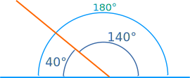
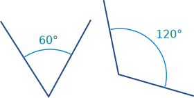

Supplementary Angles
Two Angles are Supplementary when they add up to 180 degrees.

These two angles (140° and 40°) are Supplementary Angles, because they add up to 180°:
Notice that together they make a straight angle.

But the angles don't have to be together.
These two are supplementary because
60° + 120° = 180°
Play With It ...
(Drag the points)
images/geom-comp-supp.js?mode=supp
When the two angles add to 180°, we say they "Supplement" each other.
Supplement comes from Latin supplere, to complete or "supply" what is needed
Spelling: be careful, it is not "Supplimentary Angle"
Complementary vs Supplementary
A related idea is Complementary Angles, they add up to 90°
How to remember which is which? Well, alphabetically they are:
- Complementary add to 90°
- Supplementary add to 180°
You can also think:
- "C" of Complementary is for "Corner"
 (a Right Angle), and
(a Right Angle), and - "S" of Supplementary is for "Straight" (180° is a straight line)
Or you can think:
- when you are right you get a compliment (sounds like complement)
- "supplement" (like a vitamin supplement) is something extra, so is bigger
817, 1804, 5232, 5234, 818, 3303, 1805, 3304, 5235, 5236